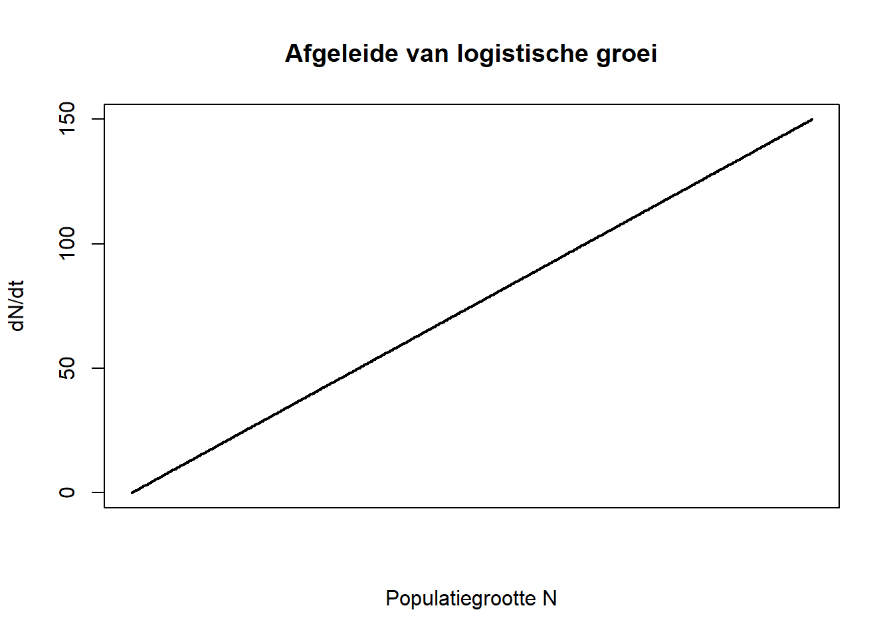
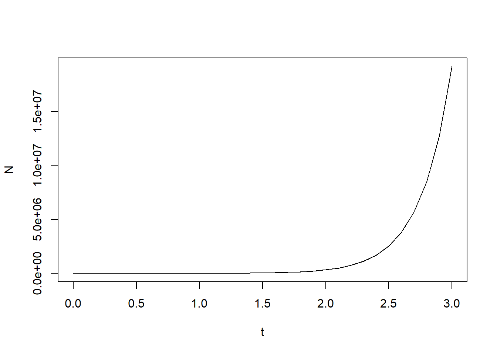
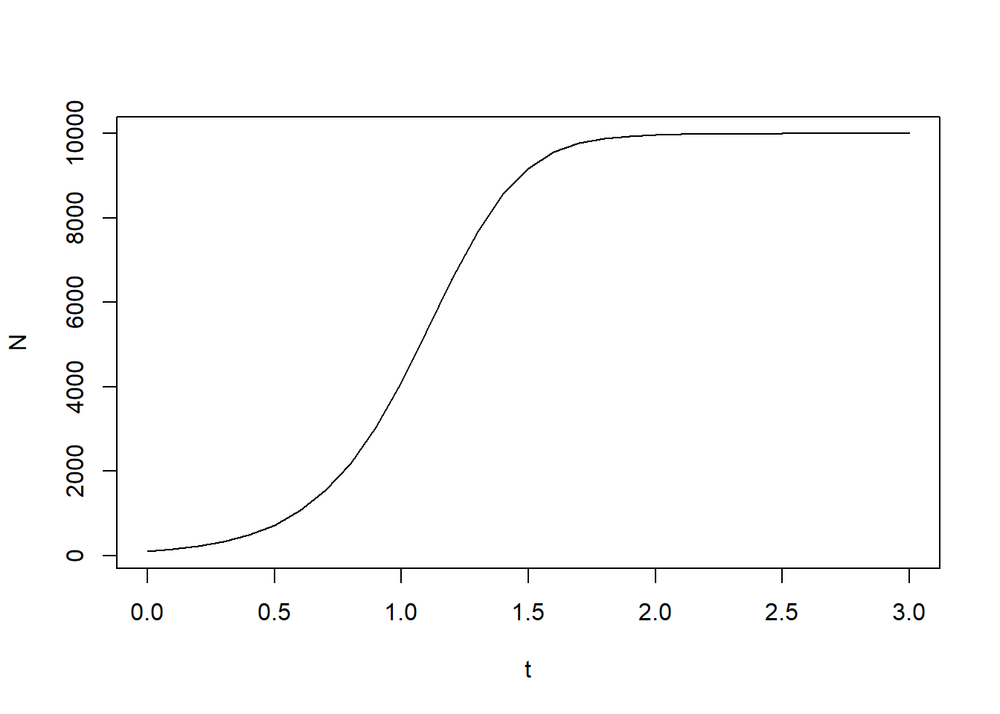
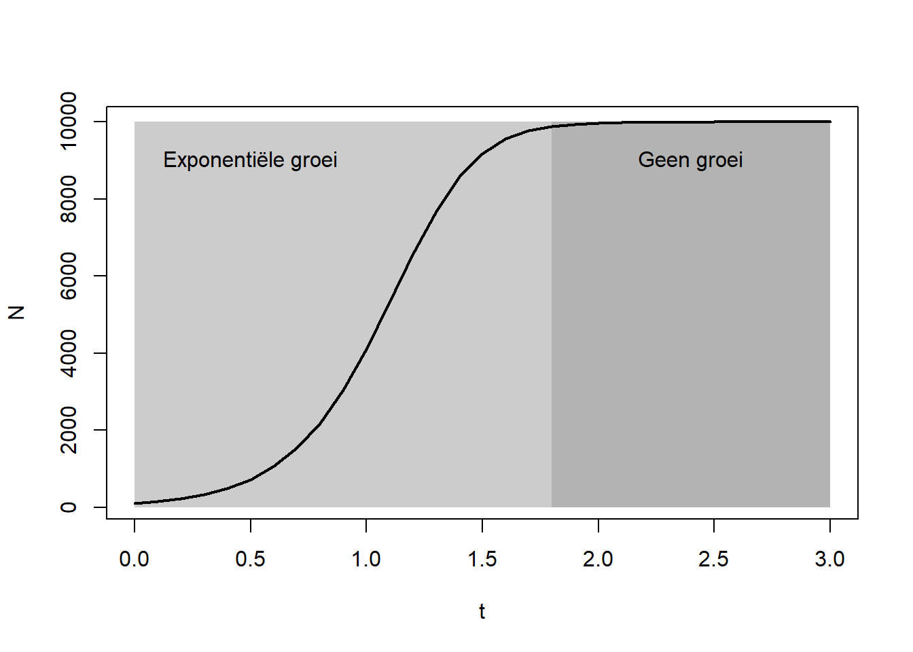
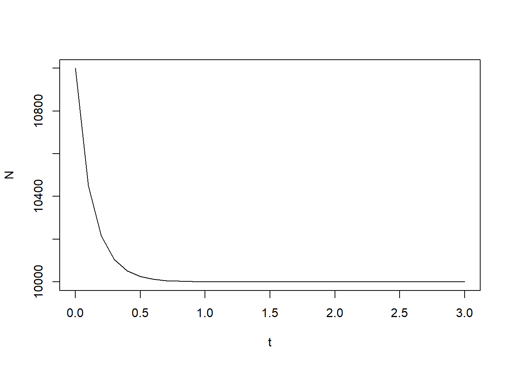
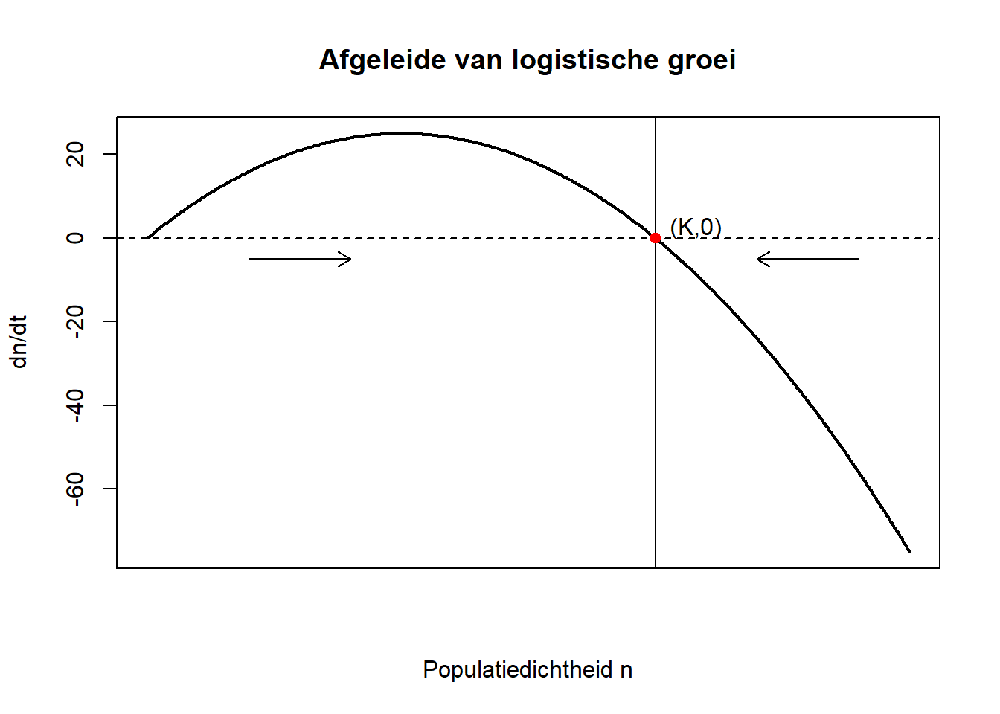

# geef je antwoord hier 3 Differentiaalvergelijkingen
Levende systemen veranderen continu. Populaties groeien, krimpen en migreren; cellen delen en sterven, en concentraties in allerlei omgevingen veranderen… Deze verandering over de tijd is vaak makkelijker bij te houden of te schatten dan de absolute aantallen: als je weet dat een diersoort gemiddeld 5 nakomelingen per jaar per organisme introduceert, kun je aan de hand hiervan vrij makkelijk de populatiegrootte over een langere tijd schatten. Dat is veel hanteerbaarder dan het aantal individuen elk jaar proberen te tellen!
Zo’n schatting kan gedaan worden door het oplossen van een differentiaalvergelijking. Dit is een vergelijking die beschrijft wat je meet: veranderingen over de tijd. Om een accurate schatting te maken, heb je naast de groei, daarnaast ook nog informatie nodig over de oorspronkelijke populatiegrootte. Een differentiaalvergelijking heeft de volgende algemene vorm:
\[\frac{dN}{dt} = f(N), \quad N(0)=N_0.\]
Hierbij is \(f\) een specifieke functie, die je observeert, en \(N(0)\) de beginwaarde.
3.1 Exponentiële groei
In het voorbeeld van de 5 nakomelingen, waarbij we aannemen dat de populatie begint met 100 individuen, kunnen we een populatiegrootte bijvoorbeeld beschrijven via
\[\frac{dN}{dt} = 5N(t), \quad N(0)=100.\]
Hierin zien we dat hoe meer individuen er zijn, hoe meer nakomelingen er bijkomen en dus hoe sneller de populatie groeit. In dit geval hebben we exponentiële groei gemodelleerd, waarbij elk individu dus per tijdseenheid 5 nakomelingen krijgt. In de oplossing voor deze differentiaalvergelijkingen is dit gedrag direct te zien.
Vraag 1: Laat door differentieren van de functie \(N(t)= Ce^{rt}\) geldt dat \(\frac{dN}{dt}=rA(t)\), waarbij \(r\) en \(C\) constantes zijn.
We kunnen bekijken hoe de groeisnelheid afhangt van de huidige populatiegrootte. We vinden dan de volgende grafiek:

We kunnen deze exponentiële groei ook zien in de grafiek die de waarde voor \(N\) numeriek bepaalt op basis van de differentiaalvergelijking.
dt <- 0.1 # tijdstappen voor berekeningen en plotten
r <- 5 # groeisnelheid
t <- seq(0,3, by = dt)
N <- numeric(length(t)) # vector om populatiegroottes in op te slaan
N[1] <- 100
for(i in 1:(length(t)-1)){
N[i + 1] <- N[i] + dt * r * N[i] # huidige waarde + tijdsstap*afgeleide (differentiaalvergelijking)
}
plot(t,N, type = 'l')
Vraag 2: Verklaar de laatste twee grafieken op basis van de differentiaalvergelijking en relateer ze aan elkaar.
Jouw antwoord
Vraag 3: Wat is, uitgaande van deze exponentiële relatie, het verband tussen de afhankelijke variabele \(\ln(N)\) en de onafhankelijke variabele \(t\)?
Jouw antwoord
3.2 Logistische groei
We zien in de grafiek voor exponentiële groei dat de populatiegrootte in drie tijdheden van 100 tot meer dan \(10^7\) is gegroeid. Dat is een enorme toenname, en het is niet realistisch dat een gebied die groei aan kan. Doordat de ruimte en de hoeveelheid voedsel beperkt is, onstaat er competitie. Hierdoor is er een bovengrens voor het totaal aantal dieren in de populatie. We noemen deze grens ook wel de draagkracht en noteren deze als \(K\). De groei van de populatie wordt dan afhankelijk van de verhouding tussen de populatiegrootte en de draagkracht. Dit zien we in de volgende uitdrukking:
\[\begin{equation} \frac{dN}{dt} = rN\left(1-\frac{N}{K}\right). \end{equation}\]
Via deze app kun je het logistische groeimodel simuleren om een intuïtie te ontwikkelen voor hoe dit werkt. Hier laten we ook enkele voorbeelden zien.
Net zoals bij de exponentiële groei kunnen we de groeisnelheid uitzetten tegen de populatiegrootte:

We kunnen de beschreven situatie, met als draagkracht 10000 individuen, op een vergelijkbare wijze visualiseren:
dt <- 0.1
r <- 5 # groeisnelheid
K <- 10000 # draagkracht
t <- seq(0,3, by = dt)
N <- numeric(length(t))
N[1] <- 100
for(i in 1:(length(t)-1)){
N[i + 1] <- N[i] + dt *r*N[i]*(1 - N[i]/K)
}
plot(t,N, type = 'l')
Merk op dat een deel van deze grafiek erg lijkt op die van de exponentiële groei. Dit zien we ook terug in de differentiaalvergelijkingen: als \(\frac{N}{K}\) erg klein, komen de twee modellen met elkaar overeen. Dit betekent dat het exponentiële groeimodel werkt onder de aanname dat de populatie zich in de exponentiële groeifase bevindt.
Na een tijdje zien we geen verandering meer in de populatiegrootte. Dit betekent dat er netto geen groei is. We spreken dan van een evenwicht.
We kunnen dus de grafiek opdelen in twee fases:

We laten nu de populatiegrootte starten boven de draagkracht. Bedenk waarom deze grafiek nu logisch is.
N[1] <- 1.1*K
for(i in 1:(length(t)-1)){
N[i + 1] <- N[i] + dt *r*N[i]*(1 - N[i]/K)
}
plot(t,N, type = 'l')
Er zijn ook andere situaties waarin populatiegroottes kunnen afnemen. Stel dat we een bacteriekolonie hebben, waarvan op verschillende tijdstippen de grootte gemeten wordt door de oppervlakte (aangeduid met \(A\) in cm\(^2\)) te bepalen die de kolonie in een petrischaal inneemt. Dit levert de volgende gegevens op:
| Tijd \(t\) (uur) | Oppervlakte \(A\) (cm\(^2\)) |
|---|---|
| 0 | 4.74 |
| 2 | 2.80 |
| 4 | 1.71 |
| 6 | 1.04 |
| 8 | 0.94 |
We nemen aan dat de oppervlakte \(A\) van de kolonie als functie van de tijd \(t\) wordt beschreven door een exponentiele functie: \[\begin{equation} A(t)=\alpha e^{\beta t}. \end{equation}\]
Vraag 4: Hoe kunnen we ervoor zorgen dat de dalende trend uit de tabel gevolgd wordt door het model? Simuleer dit, en haal hierbij inspiratie uit eerder gegeven code. De exacte datapunten uit de tabel hoeven niet benaderd te worden, het gaat om de trend.
# jouw antwoord3.3 Parameters schatten
We kunnen de draagkracht en groeisnelheid ook afleiden uit andere observaties.
Vraag 5 We beschrijven een populatie met dichtheid \(n\) (exacte eenheden laten we buiten beschouwing) en observeren dat de het aantal geboortes \(g\) en sterftes \(s\) in de populatie dichtheidsafhankelijk is. We hebben hiervoor de vergelijkingen \[\begin{equation} \frac{dg}{dt} = 1 + 0.04n, \quad \frac{ds}{dt} = 0.45 + 0.06n. \end{equation}\]
(a) Interpreteer deze vergelijkingen. Wat betekent het dat het aantal geboortes en sterftes afhankelijk is van de dichtheid? Geef een voorbeeld van een verklaring.
jouw antwoord
We kunnen deze vergelijkingen plotten. Dit geeft de volgende figuur:
# parameters
g <- function(n) 1 + 0.04*n
s <- function(n) 0.45 + 0.06*n
# evenwichtspunt
K <- 27.5
# plotbereik
n_vals <- seq(0, 60, length.out = 400)
# basisplot
plot(n_vals, g(n_vals), type = "l", lwd = 2, col = "blue",
ylim = c(0, max(g(n_vals), s(n_vals))),
xlab = "Populatiedichtheid n",
ylab = "Geboortes / Sterftes per tijdseenheid")
lines(n_vals, s(n_vals), lwd = 2, col = "red")
# evenwichtspunt
points(K, g(K), pch = 19)
# legenda
legend("topleft",
legend = c("geboortes", "sterftes"),
col = c("blue", "red"),
lwd = 2)
We willen nu deze processen samen nemen in één vergelijking, en werken daarbij onder de aanname van logistische groei.
(b) Wat wordt de uitdrukking voor de verandering per tijdseenheid \(\frac{dn}{dt}\) als er wordt aangenomen dat de dichtheid \(n\) logistische groei volgt? Wat is de initiële per capita groeisnelheid \(r\), en wat is de draagkracht \(K\)? Relateer je antwoord ook aan bovenstaande figuur.
jouw antwoord
Met de gevonden parameters kunnen we een model noteren dat de populatiegrootte beschrijft als functie van tijd.
(c) Schrijf dit model uit. In plaats van de dichtheid over de tijd plotten, kunnen we ook de gevonden vergelijking plotten over de tijd. Dat wil zeggen, we plotten de afgeleide van de dichtheid over de tijd. Dit geeft de volgende figuur, die we eerder hebben gezien:

We zien dus dat de afgeleide gelijk is aan 0 als \(n=K\) geldt. Dat is ons evenwichtspunt.Wat voor interpretatie heeft dit voor het per capita sterfte- en geboortecijfer? Wat gebeurt er met de populatiegrootte als \(n=K\) geldt? Wat als \(n\) iets kleiner is dan \(K\)? En iets groter?
jouw antwoord
(d) Simuleer nu het model met de gevonden waarden voor \(r\) en \(K\) (gebruik eerder gegeven code als voorbeeld). Bedenk een manier om aan de hand van het object \(n\) (de berekende dichtheid per tijdstip) een benadering te krijgen van de waarden van \(r\) en \(K\). Dat wil zeggen: bedenk dat je in een situatie zit waarin je alleen deze lijst zou hebben, en niet zou weten welke waarden van \(r\) en \(K\) zijn gebruikt om deze te maken. Hoe zou je deze toch kunnen schatten (tip: wanneer observeren we gedrag direct gerelateerd aan deze parameters?)
jouw antwoord
(e) We kunnen de schatting voor \(r\) wat preciezer maken. In Opdracht XX heb je een verband gevonden tussen de logaritme van de afhankelijke variabele en de tijd in het geval van exponentiële groei. Dit verband gaan we hier gebruiken (met hernoemde variablelen). Negeer de draagkracht \(K\), en werk dus met het exponentiële groeimodel om \(r\) te schatten. Pas de kennis van HYPERLINK REGRESSIE toe om een regressielijn in R te bepalen. Komt de waarde van \(r\) overeen met de waarde die je hebt berekend?
(f) Beschrijf waarom het toepassen van de lineaire regressie bij de vorige opgave nodig was om aan te nemen dat de populatie exponentieel groeit. Verwijs hiernaar naar HYPERLINK AANNAMES.